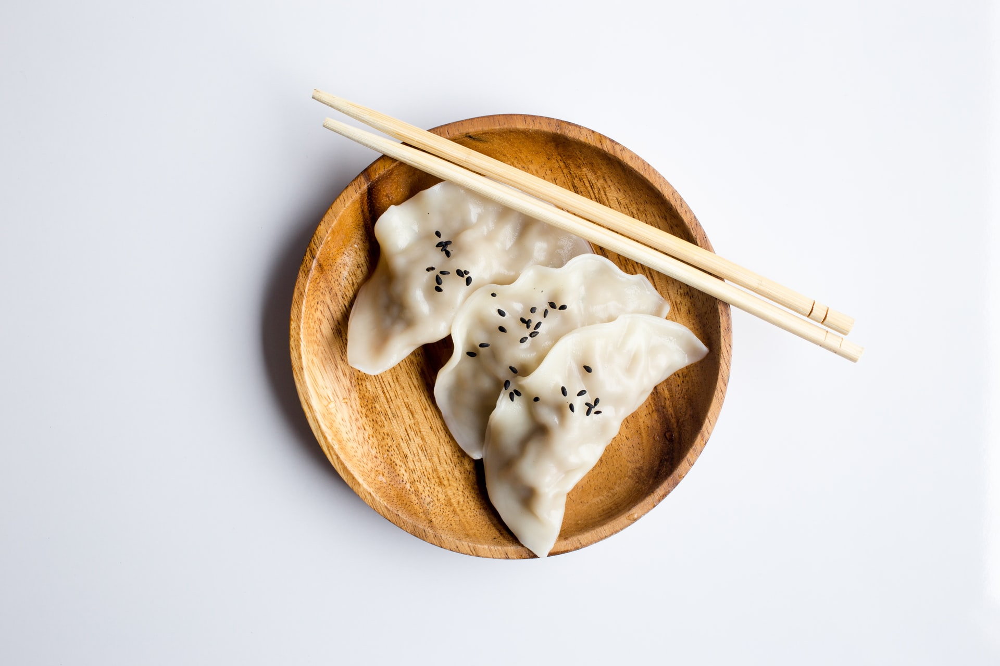

Money won’t be able to buy happiness, but it can get you this delicious meal instead.
Believe me, a good piece of chicken can make anybody believe in the existence of God.
Chicken is better than chick who said She will die for you. Chicken actually died for you. Chicken is love!
Your own mortality is like eating your vegetables: You may not want to do it, but it's good for you.
Green strongly influences the heart and helps alleviate tension. Positive qualities associated with green are generosity, humility, and cooperation. Foods of the green vibration are all green fruits and green vegetables.

Explore Our Food
Welcome to our free online resources for restaurant and bar owners. Here you will find tips, tricks and valuable information about how to start a restaurant or grow your existing business.
Burger 200Rupees
Salad 150rupees
Pastry 100rupees
CupCake 200rupees
Sandwich 180rupees
Pizza 300rupees
Popular Recipes
Thali Thali (meaning "plate") is a round platter used to serve food in the Indian subcontinent and Southeast Asia. Thali is also used to refer to an Indian-style meal made up of a selection of various dishes which are served on a platter.
Samosa A samosa is a fried or baked pastry with a savoury filling, such as spiced potatoes, onions, peas, cheese, beef and other meats, or lentils. It may take different forms, including triangular, cone, or half-moon shapes, depending on the region.
Biryani Biryani is a mixed rice dish with its origins among the Muslims of the Indian subcontinent.It is made with Indian spices, rice, and meat,and sometimes, in addition, eggs and/or potatoes in certain regional varieties. Biryani is popular throughout the Indian subcontinent, as well as among its diaspora.